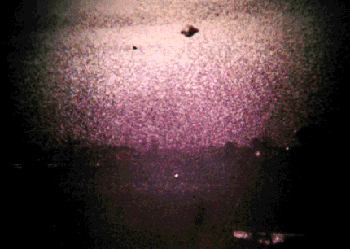

Observation en Espagne ce mois-là
A Barcelone (Espagne), observation (ci-contre).
Dans le secteur de Dulce (comté de Rio
Arriba, Nouveau-Mexique), Manuel Gomez retrouve une Vache Hereford de 4 ans née au pays "mutilée". Aux côtés de l'inspecteur
du bétail Jim Byrd et M. Bob Johnson, de la surveillance de la Chasse et de la Pêche au Nouveau-Mexique, l'enquêteur
Valdez constante la langue et organes sexuels enlevés "avec
précision", sang rosâtre sortant du museau, marque sur la partie basse de la patte postérieure gauche, comme faite
par une sorte de crampon ou grosse pince, une des cornes de la bête brisée enfoncée dans le sol, carcasse trop
atteinte par l'autolyse (destruction d'un tissu par ses propres enzymes) pour effectuer des tests. Animal
décédé depuis 24 h maximum 36 h. Aucune trace d'empreintes autour de la carcasse. Selon l'enquêteur, la bête a été
emmenée en un autre lieu pour y être mutilée, puis elle fut ramenée sur place et lâchée d'une certaine hauteur Sider, J.:.
Plusieurs témoins situés dans les départements du Gard (Languedoc-Roussillon) et de
l'Ardèche (Rhône-Alpes) observent le passage SO-NE d'un phénomène lumineux rougeâtre. Les témoins décrivent une
boule incandescante suivi d'une trainée. Aucun bruit n'est entendu lors de l'observation Ces personnes ont été témoins d'une probable rentrée atmosphériqueGEPAN : PAN classé B.
La photographie du 20 à Rio de Janeiro

A Rio de Janeiro (Brésil), Saul Janusas
prend 2 clichés d'un objet métallique sombre en forme de saturne. Il peut le voir clairement dans la brume rougeâtre
du crépuscule particulière au coucher du soleil de l'hiver.
Dans le rapport GEPAN de juin au Comité Scientifique, Claude Poher indique que les objets observés sont généralement bien
physique et d'une technologie inconnue.